Judul Film
Top Gun ; Maverick
Tanggal Rilis: 27 Mei 2022
Genre: Action
Deskripsi: Film Top Gun: Maverick adalah sebuah film aksi yang
menceritakan tentang
kisah seorang pilot pesawat tempur yang bernama Pete ‘Maverick’
Mitchell (Tom Cruise)
Pete atau yang lebih dikenal dengan nama Maverick
adalah seorang kapten pilot pesawat tempur yang sudah bekerja selama
lebih dari 30 tahun.
Trailer
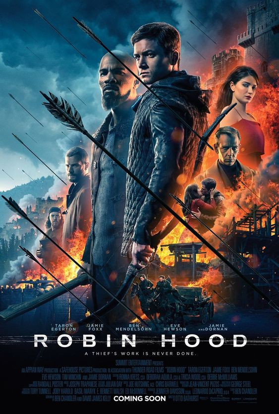
Judul Film
Robin Hood
Tanggal Rilis: 20 November 2018
Genre: Action
Deskripsi: Robin Hood adalah tokoh dalam cerita rakyat Inggris.
Ia adalah seorang bangsawan yang menjadi musuh Sheriff of Nottingham
atau Prince John,
melawan pejabat yang korupsi untuk kepentingan rakyat
Trailer
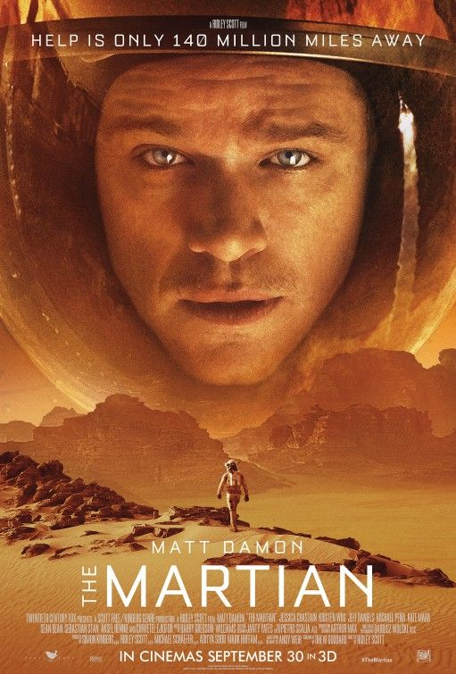
Judul Film
The Martian
Tanggal Rilis: 30 September 2015
Genre: Action
Deskripsi: Mark Watney terdampar di plamet mars setelah kru pesawat meninggalkannya.
Mengira dia telah tewas terhantam badai. Kini dengan pasokan minim.
Mark harus berjuang untuk menjaga dirinya tetap hidup.
Trailer
Judul Film
Gran Turismo
Tanggal Rilis: 23 Agustus 2023
Genre: Action
Deskripsi: Gran Turismo diangkat dari kisah nyata menggemparkan dari sebuah regu kuda hitamseorang pemain gim dari kelas pekerja,
seorang mantan pebalap mobil yang redup, dan seorang eksekutif olahraga balap yang idealis.
Bersama-sama mereka mengambil risiko besar dan berjuang masuk dalam olahraga paling elit di dunia.
Trailer
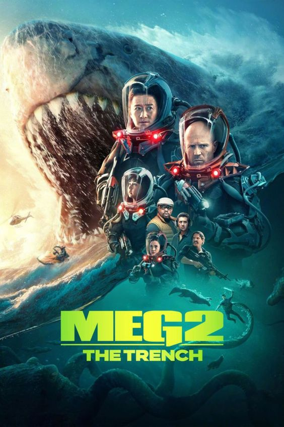
Judul Film
Meg 2: The Trench
Tanggal Rilis: 2 Agustus 2023
Genre: Action
Deskripsi: Film ini merupakan adatapsi dari novel karya Steve Alten yang menceritakan tentang Hiu purba raksasa yang sering muncul di laut dalam Palung Mariana.
Di season keduanya ini melanjutkan kisah perjalanan Jonas Taylor yang memimpin sebuah tim untuk menyelam ke laut terdalam.
Trailer

Judul Film
Mission: Impossible – Dead Reckoning Part One
Tanggal Rilis: 12 Juli 2023
Genre: Action
Deskripsi: Ethan Hunt dan tim IMF beraksi dalam misi paling berbahaya dari yang pernah ada.
Melacak sebuah senjata jenis baru yang dapat mengancam kelangsungan umat manusia, sebelum jatuh ke tangan yang salah.
Trailer
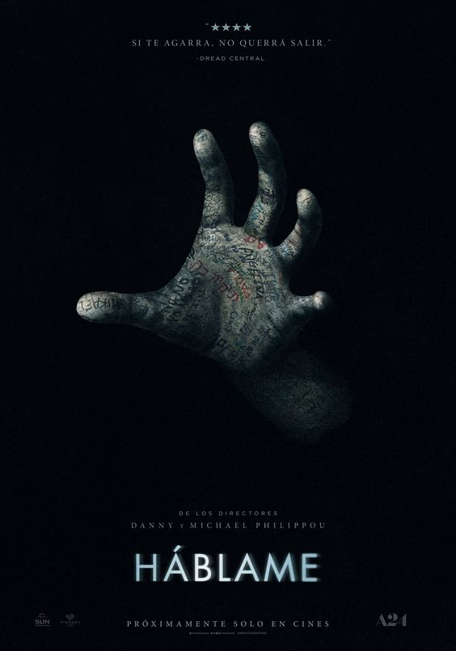
Judul Film
Talk to Me
Tanggal Rilis: 23 Agustus 2023
Genre: Horor
Deskripsi: Sekelompok remaja menemukan cara berkomunikasi dengan roh halus.
Mereka terpikat dengan sensasinya dan ketagihan untuk mencobanya.
Sampai akhirnya, mereka tidak sadar telah melepaskan kekuatan gelap yang mengerikan.
Trailer
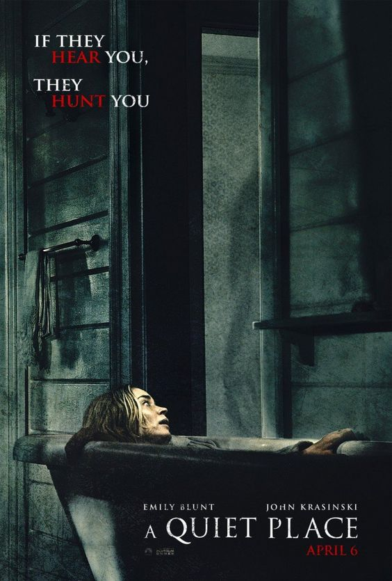
Judul Film
A Quiet Place
Tanggal Rilis: 3 April 2018
Genre: Horor
Deskripsi : Sebuah keluarga hidup dalam ketakutan.
Mereka berusaha harus hidup dalam keheningan agar terhindar dari mahluk misterius.
Trailer
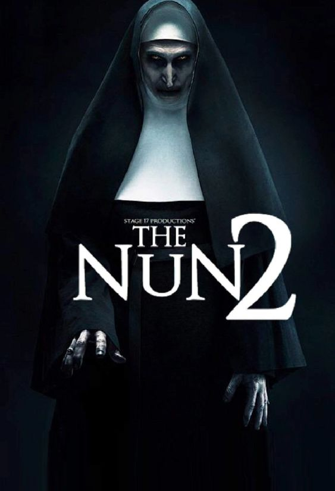
Judul Film
The Nun II
Tanggal Rilis: 6 September 2023
Genre: Horor
Deskripsi : Berlatar tahun 1956, bermula dari pembunuhan seorang pendeta.
Suster Irene (Taissa Farmiga) sekali lagi berhadapan dengan kekuatan jahat yang sangat besar.
Valak sang biarawati iblis demi kedamaian hidupnya serta orang-orang di sekitarnya
Trailer
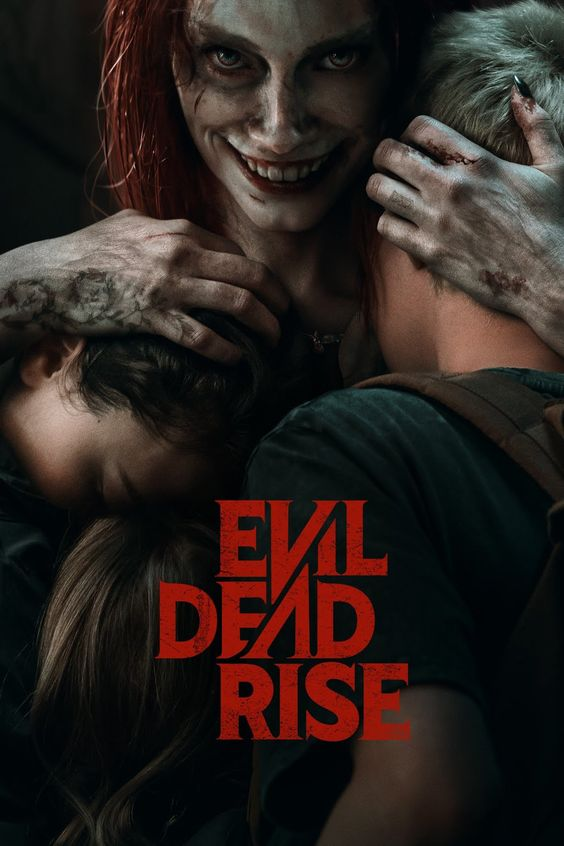
Judul Film
Evil Dead Rise
Tanggal Rilis: 5 Mei 2023
Genre: Horor
Deskripsi : Evil Dead Rise menceritakan kisah mengejutkan tentang dua saudara perempuan yang terasing yang reuninya dipersingkat oleh munculnya setan yang merasuki manusia.
mendorong mereka ke dalam pertempuran utama untuk bertahan hidup saat mereka menghadapi versi keluarga paling mengerikan yang bisa dibayangkan.
Trailer
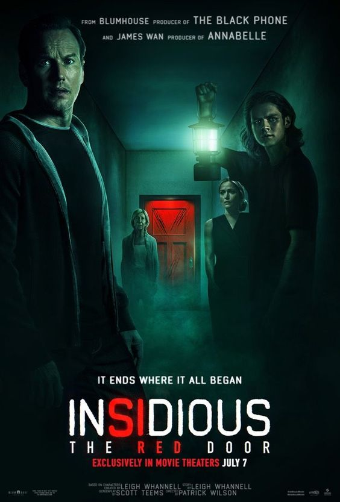
Judul Film
INSIDIOUS: THE RED DOOR
Tanggal Rilis: 5 Juli 2023
Genre: Horor
Deskripsi : Berlatar 10 tahun setelah film keempat.
seri kelima akan berkisah tentang usaha keluarga Lambert, Josh (Patrick Wilson), Renai (Rose Byrne) dan anaknya yang sudah dewasa, Dalton (Ty Simpkins) mencari tahu kenapa keluarga mereka kembali dianggu oleh sosok arwah.
Trailer
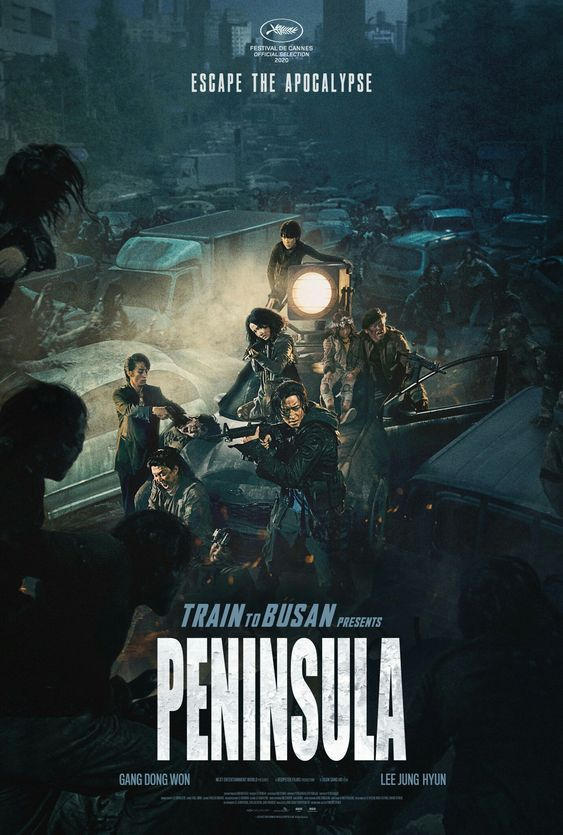
Judul Film
Train To Busan Presents Peninsula
Tanggal Rilis: 16 Oktober 2020
Genre: Horor
Deskripsi : Ketika wabah zombie melanda, Jung-seok (GANG Dong-won) nyaris tidak lolos dari Korea Selatan hidup-hidup.
Ketika hidup dalam keputusasaan di Hong Kong, ia menerima tawaran yang menarik untuk kembali ke semenanjung yang dikarantina
Trailer
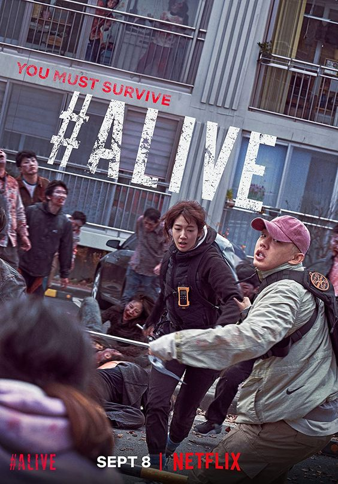
Judul Film
Alive
Tanggal Rilis: 24 Juni 2020
Genre: Horor
Deskripsi : Alive adalah sebuah film mayat hidup seru Korea Selatan tahun 2020 garapan Cho Il-hyung.
dan menampilkan Yoo Ah-in dan Park Shin-hye
Trailer
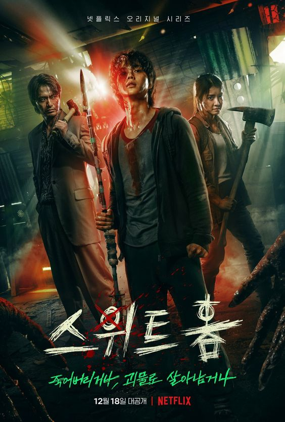
Judul Film
Sweat Home
Tanggal Rilis: 18 Desember 2020.
Genre: Horor
Deskripsi : Drama SWEET HOME memiliki alur cerita yang sangat menarik tentang munculnya para monster di tengah kehidupan manusia.
Di mana infeksi penyakit menyebar membuat manusia yang telah tertular jadi monster mengerikan.
Mereka juga menyerang manusia hingga menghancurkan kehidupan orang-orang.
Trailer
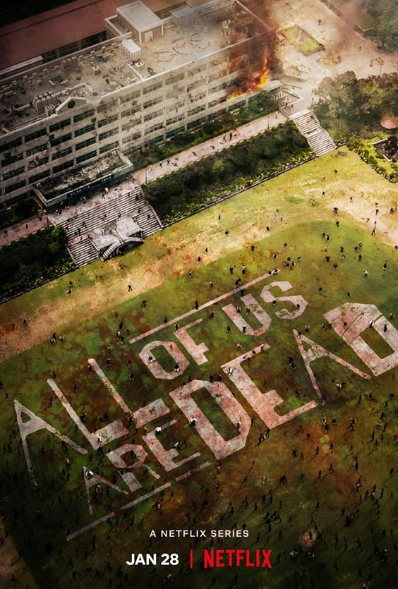
Judul Film
All of Us Are Dead
Tanggal Rilis: 28 Januari 2022
Genre: Horor
Deskripsi : Serial ini menceritakan mengenai wabah zombie yang menyerang SMA Hyosan di Korea Selatan.
Virus tersebut awalnya berasal dari salah seorang siswi yang digigit oleh tikus di sekolah.
Sekelompok siswa yang belum terinfeksi pun berusaha berjuang untuk bertahan hidup di tengah peliknya wabah tersebut.